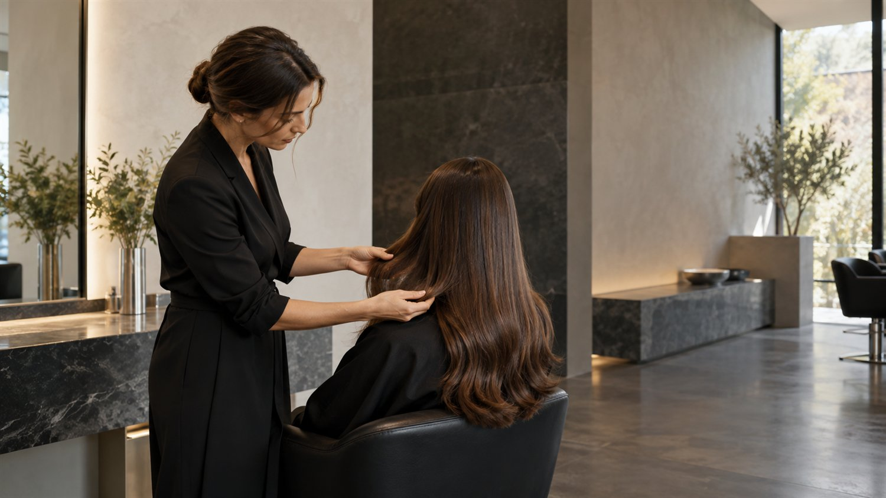

Distribuição profissional · Curadoria técnica
Performance profissional para salões que não trabalham com o comum.
Tratamentos selecionados para hidratação, nutrição, reconstrução e transformação capilar em rotinas profissionais exigentes.
01 Atendimento especializado
02 Linhas profissionais
03 Curadoria para salões
04 Distribuição especializada
Protocolos por necessidade
Tratamentos de alta performance
Uma seleção construída para ampliar possibilidades técnicas e entregar resultados consistentes no dia a dia do salão.
Seleção profissional
Essenciais para uma rotina de excelência.

Curadoria que orienta
Resultado profissional começa pela escolha certa.
Cada salão tem uma rotina, um público e desafios próprios. Nossa seleção reúne linhas profissionais que apoiam protocolos consistentes, com atendimento próximo em cada decisão.
Conhecer a seleçãoMarcas distribuídas
Marcas que elevam
o trabalho profissional.
Portfólio selecionado para salões que transformam conhecimento técnico em experiências memoráveis.
Representações tipográficas para fins de protótipo. Marcas pertencentes aos seus respectivos titulares.
Atendimento consultivo
Escolhas técnicas exigem atendimento à altura.
Nossa equipe auxilia profissionais na escolha de linhas, tratamentos e protocolos adequados às necessidades do salão.
Falar com um consultor